| 1. 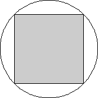 | 2. 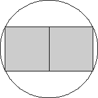 | 3. 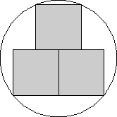 | ||
| r = √2 / 2 = .707+ Trivial. | r = √5 / 2 = 1.118+ Trivial. | r = 5 √17 / 16 = 1.288+ Found by Erich Friedman in 1997. |
| 4. 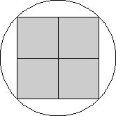 | 5. 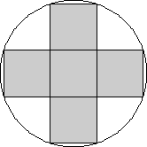 | 6. 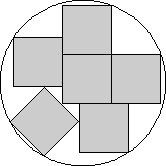 | |||||||
| r = √2 = 1.414+ Found by Erich Friedman in 1997. | r = √10 / 2 = 1.581+ Found by Erich Friedman in 1997. | r = 1.688+* Found by Erich Friedman in 1997. | |||||||
| 7. 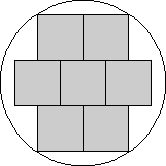 | 8. 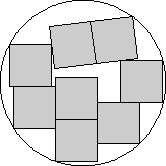 | 9. 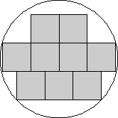 | |||||||
| r = √13 / 2 = 1.802+ Found by Erich Friedman in 1997. | r = 1.978+* Found by David W. Cantrell in March 2002. | r = √1105 / 16 = 2.077+ Found by Erich Friedman in 1997. | |||||||
| 10. 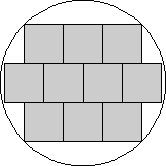 | 11. 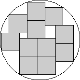 | 12. 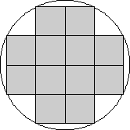 | ||
| r = 3 √2 / 2 = 2.121+ Found by Erich Friedman in 1997. | r = 2.214+ Found by David W. Cantrell in March 2002. | r = √5 = 2.236+ Found by Erich Friedman in 1997. |
| 13. 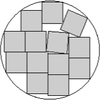 | 14. 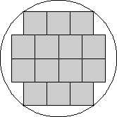 | 15. 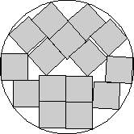 | ||
| r = 2.3607+ Found by David W. Cantrell in November 2010. | r = 2.5 Found by Erich Friedman in 1997. | r = 2.533+ Found by by David W. Cantrell in June 2002. |
| 16. 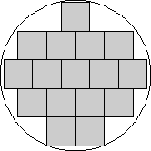 | 17. 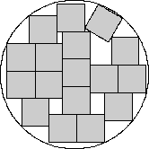 | 18. 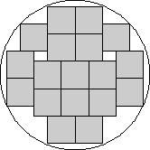 | ||
| r = √11009 / 40 = 2.623+ Found by Erich Friedman in 1997. | r = 2.677+ Found by Maurizio Morandi in December 2010. | r = √481 / 8 = 2.741+ Found by David W. Cantrell in March 2002. |
| 19. 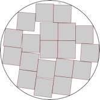 | 20.
| 21. 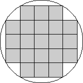 | ||
| r = 2.807+ Found by David W. Cantrell in June 2002. | r = 2.893+ Found by David W. Cantrell in June 2002. | r = √34 / 2 = 2.915+ Found by Erich Friedman in 1997. |
| 22. 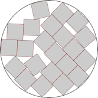 | 23. 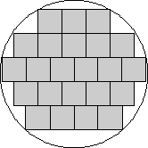 | 24. 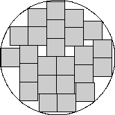 | ||
| r = 3.036+ Found by David W. Cantrell in June 2002. | r = 3.073+ Found by David W. Cantrell in June 2002. | r = 3.110+ Found by Maurizio Morandi in October 2010. |
| 25. 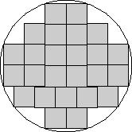 | 26. 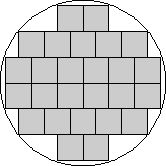 | 27. 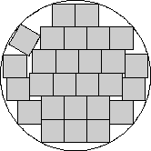 | ||
| r = √5809 / 24 = 3.175+ Found by David W. Cantrell in April 2002. | r = √41 / 2 = 3.201+ Found by Erich Friedman in 1997. | r = 13√145/48 = 3.261+ Found by Maurizio Morandi in September 2010. |
28.
| 29. 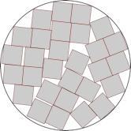 | 30. 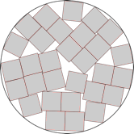 | ||
| r = 3.3471+ Found by David W. Cantrell in November 2010. | r = 3.412+ Found by DC after MM in August 2012. | r = √27985 / 48 = 3.485+ Found by David W. Cantrell in March 2002. |
| 31. 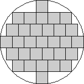 | 32. 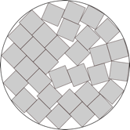 | 33. 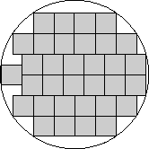 | ||
| r = 5 √2 / 2 = 3.535+ Found by Erich Friedman in 1997. | r = √40385 / 56 = 3.588+ Found by Erich Friedman in 1997. | r = √13 = 3.605+ Found by Maurizio Morandi in June 2010. |
| 34. 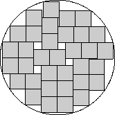 | 35. 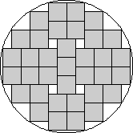 | |
| r = 3.629+ Found by Maurizio Morandi in December 2010. | r = √53 / 2 = 3.640+ Found by David Eppstein in March 2002. |